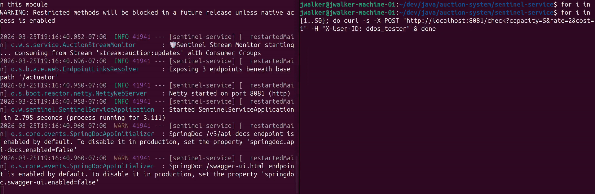
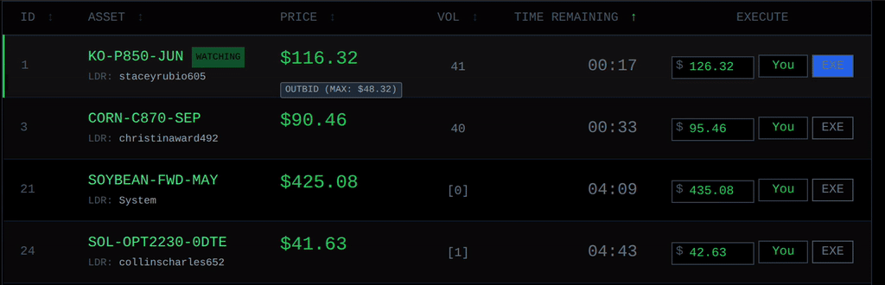
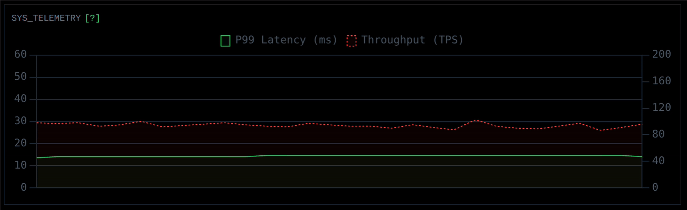

Home
Bidstream is a reactive, high-frequency trading platform designed to handle massive traffic spikes, mitigate race conditions via atomic state management, display continuously updating visuals representing real-time data, and run live machine learning fraud detection without degrading performance.

Live dashboard processing bot swarm traffic while maintaining stable P99 latency.
(Press play for a 3-minute technical walkthrough of the architecture and code.)
Architecture
The ecosystem relies on an event-driven, decoupled architecture.
graph TD
%% Styling Definitions
classDef client fill:#1f2937,stroke:#4ade80,stroke-width:2px,color:#f3f4f6
classDef engine fill:#1e40af,stroke:#60a5fa,stroke-width:2px,color:#eff6ff
classDef redis fill:#991b1b,stroke:#f87171,stroke-width:2px,color:#fef2f2
classDef python fill:#065f46,stroke:#34d399,stroke-width:2px,color:#ecfdf5
%% Nodes
Client["💻 Client Browser<br/>(React / Vanilla JS)"]:::client
Engine["⚙️ Bidding Engine<br/>(Java Spring WebFlux)"]:::engine
Redis[("🗄️ Redis Cache<br/>(State / Lua / PubSub)")]:::redis
Sentinel["🧠 Sentinel ML<br/>(Python CatBoost)"]:::python
%% Connections
Client -- "1. HTTP POST (Execute Bid)" --> Engine
Engine -- "2. Evaluate Atomic Lua Script" --> Redis
Engine -. "3. Async Micro-batch (WebClient)" .-> Sentinel
Redis -- "4. Pub/Sub (State Change Notification)" --> Engine
Engine -- "5. Server-Sent Events (Live Logs & Prices)" --> Client
Sentinel -. "6. Fraud Alert (Redis Stream)" .-> RedisKey Features
1. DDoS Mitigation at the Cache Layer
To protect the main Java JVM from wasting CPU cycles on dead or malicious traffic, the perimeter is secured by a custom token bucket rate limiter.

Redis-backed Token Bucket algorithm instantly evades a simulated 50-request DDoS attack.
Every incoming request is evaluated in-memory within Redis. Malicious IPs attempting to flood the application are dropped instantly at the cache layer, maintaining stability for legitimate users.
2. Atomic Transactions and Race Condition Prevention
In a highly concurrent system, two users bidding at the exact same millisecond can cause a double-spend or "time of check to time of use" (TOCTOU) vulnerability. To solve this, the Java server does not evaluate the math. Instead, it delegates the bid to an atomic Redis Lua script. This guarantees strict consistency and optimistic locking.

An atomic Lua script safely resolves simultaneous bids, preventing race conditions and double-spends.
sequenceDiagram
participant C as Client (User/Bot)
participant J as Java Service
participant R as Redis (Lua Script)
C->>J: POST /bid<br/>($15.00, Expected Version: 4)
J->>R: EVAL update_auction.lua
activate R
Note right of R: Transaction locked
Note right of R: 1. Check if expired (TIME)<br/>2. Verify current version == 4<br/>3. Update price to $15.00<br/>4. Increment version to 5
R-->>J: Return success<br/>(New Version: 5)
deactivate R
J-->>C: 200 OK<br/>(Bid Accepted)3. Non-Blocking I/O and Real-Time Data Streaming
Built entirely on Spring WebFlux, the application uses a small pool of non-blocking event loop threads. When Redis commits a state change, it publishes a notification that Java pushes directly to the browser via Server-Sent Events (SSE).

Server-Sent Events stream hundreds of logs per second without choking the browser's render thread.
To prevent the browser's rendering engine from choking on hundreds of log lines per second, the frontend leverages a detached DocumentFragment to batch DOM mutations in memory before repainting the screen, keeping the framerate smooth.

Live Throughput (TPS) and P99 Latency metrics reacting instantly to the distributed bot swarm.
The backend utilizes Spring Boot's Micrometer registry to aggregate high-frequency requests into rolling windows. The frontend then processes this time-series data using a lightweight rendering cycle.
4. Decoupled AI Fraud Detection
Running heavy machine learning models on the main server thread destroys P99 latency. Therefore, fraud detection is entirely decoupled.
A separate Sentinel microservice collects live bids in micro-batches and sends them to a Python CatBoost model. If a bot is detected, an alert is pushed to a Redis Stream. The Java engine reads the stream, reverts the bad bid to the correct price, and bans the user asynchronously without interrupting the flow of ongoing auctions.
Live Telemetry & Monitoring
Bidstream's performance and system health are tracked in real-time. You can view the live Grafana dashboard, which monitors throughput, P99 latency, and bot-rejection rates across the distributed system:
API Documentation
The backend services auto-generate OpenAPI (Swagger) documentation. You can explore the live production endpoints, request payloads, and schema definitions interactively:
- 📖 Link available upon request
Quick Start
The fastest way to run the entire distributed system locally is via Docker Compose.
# 1. Clone the repository
git clone https://github.com/walker-systems/auction-system.git
cd auction-system
# 2. Start the infrastructure
docker compose up -d
# 3. Access the dashboard
# Open your browser and navigate to: http://localhost:8080
Local Development Setup
If you wish to run the microservices independently for development:
1. Start Redis
docker run -d -p 6379:6379 --name bidstream-redis redis:7.2-alpine
2. Start the Machine Learning API (Python)
cd sentinel-ml
python -m venv .venv
source .venv/bin/activate
pip install -r requirements.txt
uvicorn main:app --port 8000
3. Start the Java Services
# Terminal 1: Bidding Engine
cd bidding-engine
./mvnw spring-boot:run
# Terminal 2: Sentinel Service
cd sentinel-service
./mvnw spring-boot:run
Created by Justin Walker